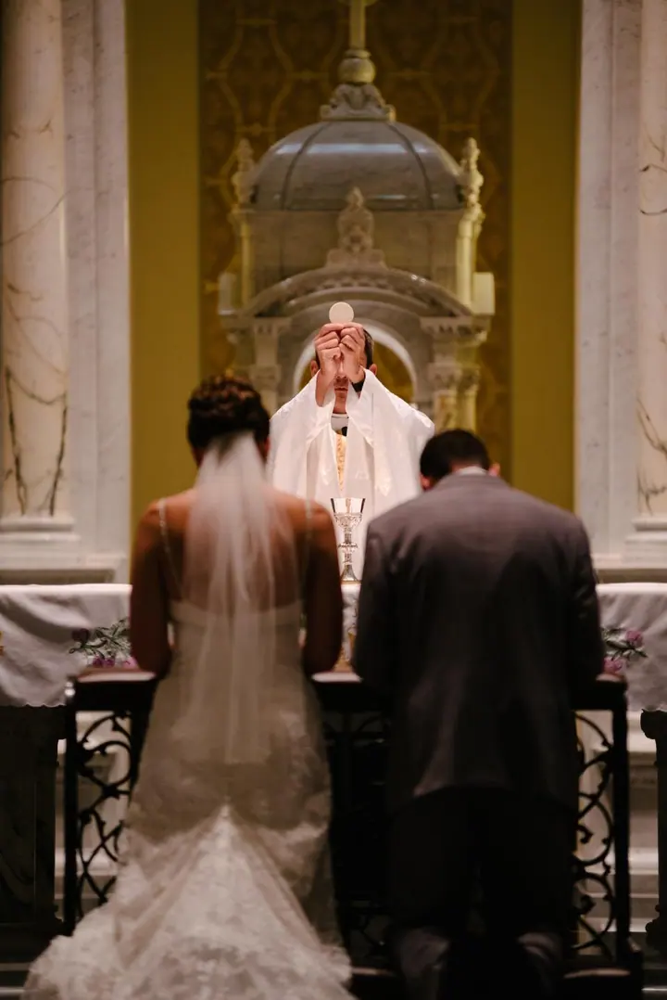
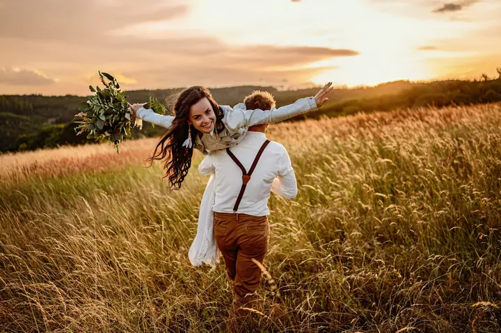

jedna
Svatby
Svatby jsou pro mě srdcová záležitost. Fotím celý den od ranních příprav přes obřad až po veselou párty a nejraději mám momentky, emoce a vtipné chvíle.

Svatební a rodinný fotograf · Slovácko, Uherský Brod, Zlín

Jmenuji se Radovan Chvíla a jsem fotograf ze Zlínského kraje. Srdcovou záležitostí jsou pro mě svatby, ale rád fotím i páry, rodiny a portréty. Nejčastěji mě potkáte na Slovácku v okolí Uherského Brodu, ale jezdím po celé republice.
Více o mně
Co fotím
jedna
Svatby jsou pro mě srdcová záležitost. Fotím celý den od ranních příprav přes obřad až po veselou párty a nejraději mám momentky, emoce a vtipné chvíle.
dvě
Romantické portréty dvojic a těhotenské focení v přírodě nebo v ateliéru. Fotíme v klidu a bez nucení, aby z fotek bylo cítit, jací spolu opravdu jste.
tři
Veselé, spontánní fotografie rodin a dětí venku v přírodě nebo v ateliéru v Uherském Brodě či ve Zlíně.
Přirozené portréty v přírodě i v ateliéru, včetně business fotek pro váš profil nebo web.
Uvolněná atmosféra se pak přenáší i do fotek.


Za objektivem
Mám velké štěstí, že se můžu živit tím, co mě baví a naplňuje. Specializuji se na fotografování lidí a za sebou mám už přes 700 svateb. Pořád mě ale nejvíc baví přirozenost, krása a emoce, které se nedají naaranžovat.
Soustředím se na detail a na atmosféru okamžiku. Miluji momentky a reportážní snímky, dojemné i vtipné fotky z párty. Snažím se, aby bylo focení uvolněné, protože tahle atmosféra se pak přenáší i do fotografií. Budu vaším parťákem a pomocníkem při přípravách i během celého dne.
Kromě svateb a rodin fotím také komerčně, pro obce a města a s dronem i ze vzduchu. Nejčastěji fotím ve Zlínském a Jihomoravském kraji, jezdím ale i na Slovensko nebo do Prahy a několik svateb jsem nafotil i v zahraničí.
Radovan
Napište mi na e-mail jména snoubenců, telefon, datum a místo svatby a přibližný počet hostů. Rád si přečtu i pár slov o vás a o tom, jakou svatbu plánujete.
Pošlu vám přesnou kalkulaci včetně volitelných položek, jako jsou fotoknihy, videoklip nebo tisky. Když bude potřeba něco upřesnit, zavolám vám.
Před svatbou vám dám tipy pro svatební focení a když budete chtít, doporučím vám skvělé dodavatele.
Fotím od ranních příprav přes obřad až po párty, na přání i s dronem. Kompletní fotografie vám dodám do týdne.
Portfolio
Fotografie jsou ilustrační
Otázky
Cena závisí hlavně na datu svatby, délce focení a vzdálenosti od Uherského Brodu (8 Kč za 1 km). Většinou se pohybuje mezi 14 000 a 22 000 Kč.
Kompletní fotografie ze svatby vám dodám do týdne.
Ano. Nejčastěji fotím ve Zlínském a Jihomoravském kraji, ale jezdím i dál, třeba na Slovensko nebo do Prahy. Několik svateb jsem nafotil i v zahraničí a mluvím anglicky.
Hodina venku s 15 upravenými fotkami stojí 3 000 Kč, dvě hodiny venku s 24 fotkami 4 000 Kč a hodina v ateliéru se 14 fotkami 3 500 Kč. Fotky si vybíráte z náhledů a fotíme v Uherském Brodě nebo ve Zlíně.

Napište pár vět o tom, co si představujete. · +420 777 654 160